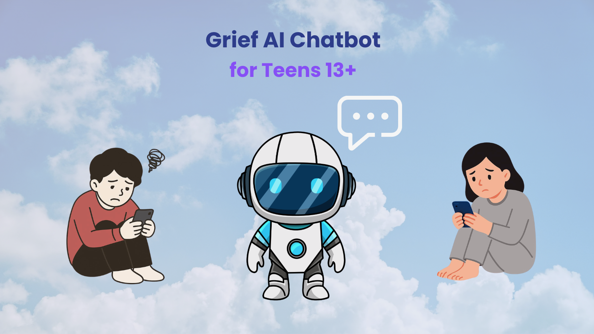
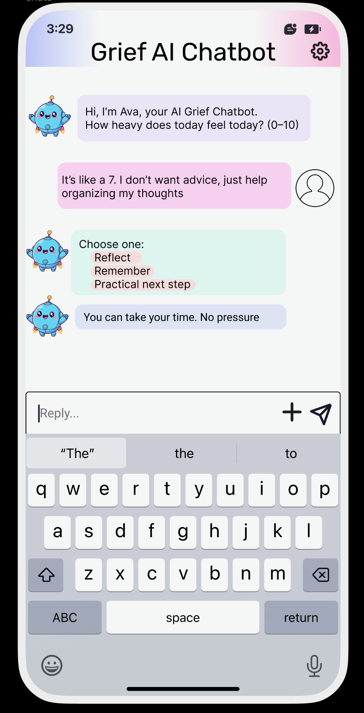

Support that doesn’t rush grief.
A concept landing page for an AI text-based grief support chatbot designed to help teens (13+) process grief through structured conversation, memory prompts, and practical next steps. This project is not voice-based.
Why this matters
Survey feedback emphasized a need for clear structure, clear boundaries, and language that validates grief without trying to “fix it.” Users also wanted transparency about emotional safety, privacy, and when the tool encourages outside support.
Clear structure
Explains how chats work, what to expect, and when it suggests outside support.
Teen-real prompts
Practical text prompts (scripts, choices, short answers) instead of generic exercises.
Boundaries & safety
Not licensed care; not a replacement for people; encourages trusted support when needed.
How it works
The experience is a short, structured text conversation: check-in → choose a path → respond (or skip) → wrap-up. The tool is designed to reduce pressure and avoid over-reliance.
Text / chat only: This prototype intentionally avoids voice features to reduce confusion and ethical risk.
Prototype Preview
This mockup shows the kind of text conversation a user can have with the bot. The tone is designed to feel calm, supportive, and low-pressure.

1. Gentle introduction
The chatbot introduces itself clearly and begins with a simple emotional check-in.
2. User-led pacing
The user can answer briefly, skip, or choose how much they want to share.
3. Guided choices
The bot offers clear paths such as Reflect, Remember, or Practical next step.
4. Support without pressure
The experience is designed to validate feelings without forcing disclosure or pretending to replace real people.
What someone might say
I’d use a grief-support chatbot if it validated feelings, didn’t push me to talk before I’m ready, and stayed clear about what it can’t do.
Choose your version
Adult view includes: setup, consent controls, boundaries, and limitations. Teen view (13+) focuses on purpose, control, and supportive text prompts (no setup details).
Meet the Team
This project was developed by a multidisciplinary team exploring AI, grief support, and ethical design.
Amrin Rahman
Oversees vision, direction, and coordination of the project.
Sanaa Sharda
Designs the user experience with clarity, accessibility, and emotional safety in mind.
Karabelo Bowsky
Conducts user research and integrates findings into ethical design decisions.
Victoria Flores
Implements the technical build and ensures functionality and performance.